library(ISLR)
library(kableExtra)Chapter 6 (Exercises)
Linear Model Selection and Regularization
Conceptual
Question 1
(a)
Which of the three models with \(k\) predictors has the smallest training RSS?
The Best Subset Selection model will have the smallest training RSS. The reasoning is that for the model with \(k\) predictors:
The Best Subset Selection model with \(k\) predictors is the best one out of \(p\choose{k}\) models with \(k\) predictors. It has lowest training Residual Sum of Squares (RSS) amongst these models.
The Forward Step-wise Selection model with \(k\) predictors is the best out of only \((p-k)\) models which augment the predictors in \(\mathcal{M}_{k-1}\) model.
The Backward Step-wise Selection model with \(k\) predictors is the best one amongst \(k\) models that contain all but one less predictor than the \(\mathcal{M}_{k+1}\) model.
Thus, amongst the three, Best Subset Selection chooses this model from the widest possible option list of models with \(k\) predictors. So, it will always have the smallest training RSS.
(b)
Which of the three models with k predictors has the smallest test RSS?
It is difficult to predict, as any of the three models could have the lowest test RSS. The Test RSS is totally different than Training RSS. A model with \(k\) parameters which has the lowest training RSS (in this case, the Best Subset Selection model) could easily overfit the training data leading to a misleadingly low Training RSS, but a very high Test RSS.
Thus, at large values of \(k\) (\(k \approx n\)), overfitting will lead to Best Subset Selection models with lowest training RSS to have a high Test RSS. Hence, any of the three models could have smallest Test RSS depending on the specific situation and value of \(k\).
(c)
True or False:
i. The predictors in the k-variable model identified by forward stepwise are a subset of the predictors in the (k+1)-variable model identified by forward stepwise selection.
TRUE. The \(\mathcal{M}_{k+1}\) model in Forward stepwise selection is chosen by adding a predictor to the existing \(\mathcal{M}_{k}\) model, after considering the best amongst \(p-k\) models that can augment the existing \(\mathcal{M}_{k}\) model. So, the predictors in \(\mathcal{M}_{k}\) model identified by forward stepwise selection will always be a subset of the predictors in \(\mathcal{M}_{k+1}\) model.
ii. The predictors in the k-variable model identified by backward stepwise are a subset of the predictors in the (k+1)-variable model identified by backward stepwise selection.
TRUE. The \(\mathcal{M}_{k}\) model in Backward stepwise selection is chosen by dropping one predictor from the existing \(\mathcal{M}_{k+1}\) model, after considering the best amongst \(k\) model options (each of which drops a different predictor). So, the predictors in \(\mathcal{M}_{k}\) model identified by Backward stepwise selection will always be a subset of the predictors in \(\mathcal{M}_{k+1}\) model.
iii. The predictors in the k-variable model identified by backward stepwise are a subset of the predictors in the (k + 1)-variable model identified by forward stepwise selection.
FALSE. The \(\mathcal{M}_{k}\) model in Backward stepwise selection is reached after consecutively dropping \(p-k\) predictors, one at each step, starting from the full model \(\mathcal{M}_{p}\). In contrast, the \(\mathcal{M}_{k+1}\) model in Forward stepwise selection is arrived at by consecutively adding a predictor at each step to the Null Model \(\mathcal{M}_{0}\). There is no guarantee that the iterations in these two different algorithms will arrive at the same set of predictors for each value of \(k\). Hence, the \(\mathcal{M}_{k}\) model in Backward stepwise selection could contain some predictors which have not yet been added into the \(\mathcal{M}_{k+1}\) model of Forward stepwise selection.
iv. The predictors in the k-variable model identified by forward stepwise are a subset of the predictors in the (k+1)-variable model identified by backward stepwise selection.
FALSE. The \(\mathcal{M}_{k}\) model in Forward stepwise selection is reached after adding a predictor at each of the \(k\) steps to the initial Null Model \(\mathcal{M}_{0}\). On the other hand, the \(\mathcal{M}_{k+1}\) model in Backward stepwise selection is reached after consecutively dropping \(p-(k+1)\) predictors, one at each step, starting from the full model \(\mathcal{M}_{p}\). There is no guarantee that the iterations in these two different algorithms will arrive at the same set of predictors for each value of \(k\). Hence, the \(\mathcal{M}_{k+1}\) model in Forward stepwise selection could contain some predictors which have already been dropped from the \(\mathcal{M}_{k+1}\) model of Backward stepwise selection.
v. The predictors in the k-variable model identified by best subset are a subset of the predictors in the (k + 1)-variable model identified by best subset selection.
FALSE. The \(k\)-variable Best subset selection model (\(\mathcal{M}_{k}\)) is selected after comparing the full set of \(p\choose{k}\) models containing \(k\) predictors. This selection process is not based on the models \(\mathcal{M}_{k+1}\) , \(\mathcal{M}_{k-1}\) or any other model. Thus, there is no guarantee that all of the predictors contained in \(\mathcal{M}_{k}\) will be present in \(\mathcal{M}_{k+1}\) model as well.
Question 2
(a)
For lasso, answer is (iii). Lasso is less flexible than least squares regression. It produces a sparse model and lowers the variance of the coefficients. The reduced flexibility does lead to some increase in bias. Thus, Lasso will give improved prediction accuracy when its increase in bias (more accurately, Bias Squared) is less than its decrease in variance.
(b)
For ridge regression, answer is again (iii). Ridge Regression is shrinkage method like Lasso. It will constrain or regularize all the coefficients towards zero, thereby decreasing their variance. Thus, it is less flexible than least squares regression. The reduced flexibility does lead to some increase in bias. Thus, Ridge regression will give improved prediction accuracy when its increase in bias (more accurately, Bias Squared) is less than its decrease in variance.
(c)
For non-linear methods, the answer is (ii). Non-linear methods are more flexible than linear least squares regression, since they allow the fit to vary over different portions of the predictor set. This leads to a lower bias, but higher variance in the estimates produced by non-linear methods. Hence, non-linear methods will give improved prediction accuracy when the increase in variance is less than its decrease in bias (or, more accurately, Bias-squared).
Question 3
This question asks us to fit the model of lasso, which places a budget on the \(l_1\) norm \(\sum{|\beta_j|}\). \[ \sum_{i=1}^n\Biggl(y_i - \beta_0 - \sum_{j=1}^p\beta_jx_{ij}\Biggr) \ \ \text{ subject to } \ \ \sum_{j=1}^p|\beta_j|\le s \]
(a)
Answer is (iv). Training RSS will steadily decrease. As we increase \(s\) from 0, the \(l_1\) norm of the estimated coefficients will increase. Thus, the coefficients will increase in magnitude away from the Null model (at \(s=0\)). As a result, the training RSS will decrease steadily.
(b)
Answer is (ii). As we increase \(s\) from 0, and move towards higher values of \(s\), we are increasingly moving from a Null model towards the least squares regression model. The intermediate models will be of the lasso form, with regularized coefficients to reduce variance. The test MSE will initially decrease (null model will have high Test MSE) but will eventually increase when \(s \to \infty\) (least squares model) due to higher variance in coefficient estimates. Thus, the test RSS will initially decrease, but eventually start increasing leading to a U-shape.
(c)
Answer is (iii). Variance will steadily increase. As we increase \(s\) from 0, and move towards higher values of \(s\), we are increasing moving from a Null model (which has Zero Variance) towards the least squares regression model (Highest Variance). The intermediate lasso models will have lower variance than the least squares model because they shrink / regularize the coefficients, reducing their variance.
(d)
Answer is (iv). (Squared) Bias will steadily decrease. As we increase \(s\) from 0, and move towards higher values of \(s\), we are increasing moving from a Null model (which has maximum bias, as it doesn’t use any predictor rather always predicts \(\overline y\) for all \(y_i\)) towards the least squares regression model (Least Squares regression estiamtes of coefficients are unbiased estimators). The intermediate lasso models will have higher bias than the least squares model because they shrink / regularize the coefficients (and make some of them zero).
(e)
Answer is (v). Irreducible error (\(\epsilon\)) will stay constant. \(\epsilon\) is a feature of the data set, and not of the fitted model. Thus, no matter which model we may fit, \(\epsilon\) will stay constant all across the values of \(s\).
Question 4
This question estimates regression coefficients in a linear regression model by minimizing the following term. This is a ridge regression model with a tuning parameter \(\lambda\). \[ \sum_{i=1}^n\Biggl(y_i - \beta_0 - \sum_{j=1}^p\beta_jx_{ij}\Biggr) - \lambda\sum_{j=1}^p\beta_j^2 \]
(a)
Answer is (iii). The training RSS will steadily increase. The model with \(\lambda = 0\) corresponds to the least squares model (which minimizes Residual Sum of Squares on the training data set), while the model with \(\lambda \to \infty\) corresponds to the Null Model (which has the highest training RSS, equivalent to Total Sum of Squares TSS). The intermediate ridge regression models will shrink the \(\beta\) coefficients towards zero, leading to some increase in bias (and, thus training RSS). As a result, the training RSS will steadily increase with rising \(\lambda\).
(b)
Answer is (ii). As we increase \(\lambda\) from 0, and move towards higher values of \(\lambda\), we are if effect, moving from a Least Squares Regression model towards the NULL model. The intermediate models will be of the ridge regression form, with regularized coefficients to reduce variance. The test MSE will initially decrease due to lower variance of ridge regression coefficients, but will eventually increase when \(\lambda \to \infty\) (Null model). Thus, the test RSS will initially decrease, but eventually start increasing leading to a U-shape.
(c)
Answer is (iv). Variance will steadily decrease. At \(\lambda = 0\), the least squares model has the highest variance amongst all values of \(\lambda\). At \(\lambda \to \infty\), the Null model will have zero variance as it only predicts a single value \(\overline{y}\) for all observations. The intermediate ridge regression models shrink the coefficients, and thus have lower variance as compared to the least squares regression model. Thus, variance will steadily decrease with rising \(\lambda\).
(d)
Answer is (iii). (Squared) Bias will steadily increase. At \(\lambda = 0\), the least squares model is unbiased. Thus squared bias is zero. At \(\lambda \to \infty\), the Null model will have the highest bias of all models, as it ignores all predictors, and predicts \(\overline{y}\) for all observations. The intermediate ridge regression models shrink the coefficients, and thus have some added bias as compared to the least squares regression model. Thus, (squared) bias will steadily increase with rising \(\lambda\).
(e)
Answer is (v). Irreducible error (\(\epsilon\)) will remain constant. \(\epsilon\) is a feature of the data set, and not of the fitted model. Thus, no matter which model we may fit, \(\epsilon\) will stay constant all across the values of \(\lambda\).
Question 6
(a)
This question asks us to consider the equation (6.12) with predictor \(p=1\). The equation is thus simplified as: \[
\min_{\beta} \Big( \ \sum_{j=1}^{p} (y_j - \beta_j)^2 \ + \ \lambda \sum_{j=1}^{p} \beta_j^2 \ \Big) \qquad \qquad (6.12)
\] \[
\min_{\beta} \Big( \ (y_j - \beta_j)^2 \ + \ \lambda \beta_j^2 \ \Big)
\]
The equation 6.14 tells us that this expression should be minimized when: \[
\hat{\beta_j^R} = \frac{y_j}{1 + \lambda} \qquad \qquad (6.14)
\] The following R code demonstrates this for randomly chosen values of y = 10 and lambda = 3. The plot at the end of the code shows that the value of beta, computed using (6.14) corresponds to the lowest of the curve drawn using (6.12). Thus, this plot confirms that (6.12) is solved by (6.14).
# Setting arbitrary values for y and lambda
y <- 10
lambda <- 3
# Creating a vector of beta values to test and plot the expression
beta <- seq(from = 0.01, to = 10, length = 100)
# Calculating expression of equation 6.12
expression <- (y - beta)^2 + lambda * (beta)^2
# Computing expected beta value as per (6.14) to minimize expression
beta_exp <- y / (1 + lambda)
# Plotting the expression versus beta values
plot(beta, expression,
xlab = "Value of Beta",
ylab = "Value of expression in (6.12)",
main = "Ridge Regression", type = "l"
)
# Adding a red point at expected beta value to see if it coincides with minimum of curve
points(beta_exp, (y - beta_exp)^2 + lambda * (beta_exp)^2,
col = "red", pch = 20, cex = 1.5
)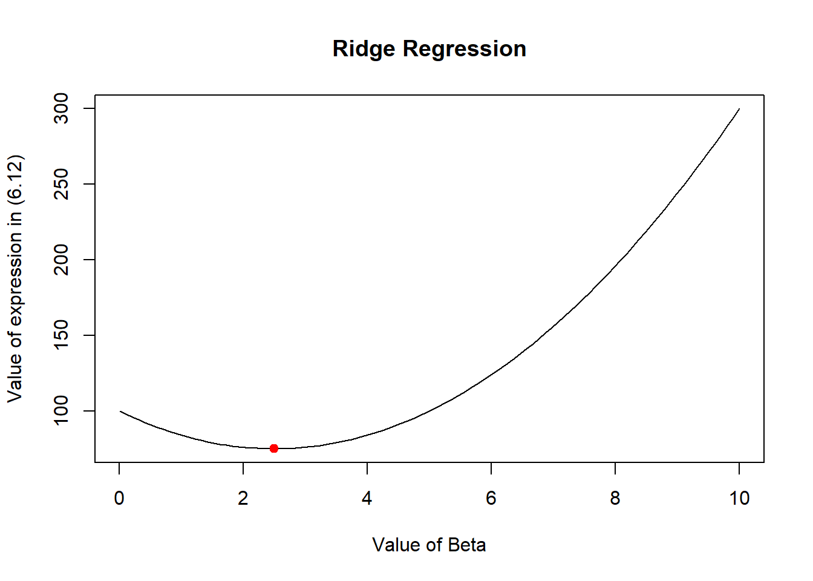
(b)
This question asks us to consider the equation (6.13) with predictor \(p=1\). The equation is simplified as: \[
\min_{\beta} \Big( \ \sum_{j=1}^{p} (y_j - \beta_j)^2 \ + \ \lambda \sum_{j=1}^{p} |\beta_j| \ \Big) \qquad \qquad (6.13)
\] \[
\min_{\beta} \Big( \ (y_j - \beta_j)^2 \ + \ \lambda |\beta_j| \ \Big)
\]
The equation 6.14 tells us three scenarios whereby this expression should be minimized: \[
\hat{\beta_j^L} = y_j - \lambda/2 \qquad \text{if} \ y_j > \lambda/2 \qquad \qquad (6.15)(i)
\] \[
\hat{\beta_j^L} = y_j + \lambda/2 \qquad \text{if} \ y_j < -\lambda/2 \qquad \qquad (6.15)(ii)
\] \[
\hat{\beta_j^L} = 0 \qquad \text{if} \ |y_j| \leq \lambda/2 \qquad \qquad (6.15)(iii)
\] The following R code demonstrates three different scenarios. Their corresponding graphs are labeled as 6.15(i), 6.15(ii) and 6.15(iii) for randomly chosen values of y in each scenario, and lambda = 3. The plot at the end of the code shows that the values of beta, computed using (6.15) correspond to the lowest of the curves drawn using (6.13) no matter what the value of y and \(\lambda\) are. Thus, the plots confirm that (6.13) is solved by (6.15).
# Setting fixed lambda value, and a sequence of beta values
lambda <- 3
beta <- seq(from = -10, to = 10, length = 100)
par(mfrow = c(1, 3))
# 6.15(i) [when y > lambda/2]
y <- 8
expression <- (y - beta)^2 + lambda * (abs(beta))
beta_exp <- y - lambda / 2
plot(beta, expression,
xlab = "Value of Beta",
ylab = "Value of expression in (6.13)",
main = "6.15(i)", type = "l"
)
points(beta_exp, (y - beta_exp)^2 + lambda * (abs(beta_exp)),
col = "red", pch = 20, cex = 1.5
)
# 6.15(ii) [when y < -lambda/2]
y <- -8
expression <- (y - beta)^2 + lambda * (abs(beta))
beta_exp <- y + lambda / 2
plot(beta, expression,
xlab = "Value of Beta",
ylab = "Value of expression in (6.13)",
main = "6.15(ii)", type = "l"
)
points(beta_exp, (y - beta_exp)^2 + lambda * (abs(beta_exp)),
col = "red", pch = 20, cex = 1.5
)
# 6.15(ii) [when y < -lambda/2]
y <- -1
expression <- (y - beta)^2 + lambda * (abs(beta))
beta_exp <- 0
plot(beta, expression,
xlab = "Value of Beta",
ylab = "Value of expression in (6.13)",
main = "6.15(iii)", type = "l"
)
points(beta_exp, (y - beta_exp)^2 + lambda * (abs(beta_exp)),
col = "red", pch = 20, cex = 1.5
)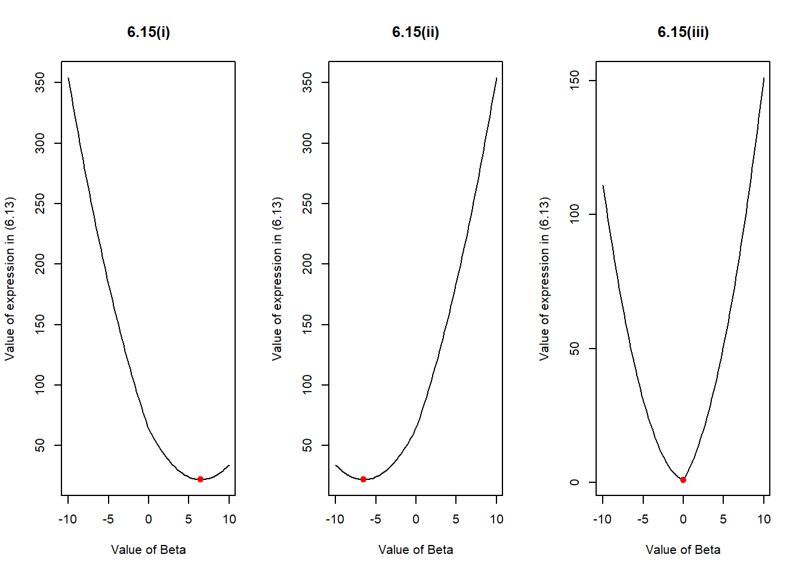
Applied
Question 8
(a)
To generate a simulated data set, we use the rnorm() function to create x and error term eps (\(\epsilon\)) of length \(n = 100\).
set.seed(3)
x = rnorm(100)
eps = rnorm(100) (b)
We generate a a vector y based on the model described below, where \(\beta_0 = 6\), \(\beta_1 = 5\), \(\beta_2 = 4\) and \(\beta_3 = 3\). \[ Y = \beta_0 \ + \ \beta_1X \ + \ \beta_2X^2 \ + \ \beta_3X^3 \ + \epsilon\] \[ Y = 6 \ + \ 5X \ + \ 4X^2 \ + \ 3X^3 \ + \epsilon\]
y = 6 + 5*(x) + 4*(x^2) + 3*(x^3) + eps(c)
We first create a data.frame sim to compile this simulated x and y. Then, we use regsubsets() function of the leaps library to perform best subset selection in order to choose the best model containing the predictors \(X\), \(X^2\), \(X^3\),…,\(X^{10}\). According to the \(C_p\), BIC statistic, the model with 3 predictors is picked up as the best model (This is actually the correct model). The adjusted-\(R^2\) erroneously picks up model \(\mathcal{M}_{10}\) as the best model, but nearly all the models \(\mathcal{M}_{3}\) to \(\mathcal{M}_{10}\) are similar in adjusted-\(R^2\) value.
The coefficients of the best model picked are \(\hat{\beta_0} = 5.96\), \(\hat{\beta_1} = 4.89\), \(\hat{\beta_2} = 4.09\) and \(\hat{\beta_3} = 3.02\). These are very close to the actual values.
# Creating the data.frame sim
sim <- data.frame(y = y, x = x)
# Using regsubsets() to perform Best Subset Selection
library(leaps)
regfit.best <- regsubsets(
y ~ x + I(x^2) + I(x^3) + I(x^4) + I(x^5) +
I(x^6) + I(x^7) + I(x^8) + I(x^9) + I(x^10),
data = sim, nvmax = 10
)
regfit.best.sum <- summary(regfit.best)
# Plotting the Cp, BIC and Adjusted R-Squared of best models
# with different number of predictors
par(mfrow = c(1, 3), mar = c(3, 2, 2, 3))
plot(regfit.best.sum$cp,
type = "b", xlab = "Number of Predictors",
main = "Cp"
)
points(
x = which.min(regfit.best.sum$cp), y = min(regfit.best.sum$cp),
col = "red", cex = 2, pch = 20
)
plot(regfit.best.sum$bic,
type = "b", xlab = "Number of Predictors",
main = "B.I.C"
)
points(
x = which.min(regfit.best.sum$bic), y = min(regfit.best.sum$bic),
col = "red", cex = 2, pch = 20
)
plot(regfit.best.sum$adjr2,
type = "b", xlab = "Number of Predictors",
main = "Adjusted R-Squared"
)
points(
x = which.max(regfit.best.sum$adjr2), y = max(regfit.best.sum$adjr2),
col = "red", cex = 2, pch = 20
)
# Displaying the coefficients of the best model obtained
coef(regfit.best, 3)(Intercept) x I(x^2) I(x^3)
5.957565 4.888312 4.087611 3.017670 (d)
The steps done in (c) above are repeated here with Forward step-wise selection and Backward step-wise selection. The function regsubsets() of leaps library does this job, when the argument method = is added. The results from forward step-wise selection are the same as that of best subset selection (it picks \(\mathcal{M}_{3}\) as the best model containing \(X\), \(X^2\) and \(X^3\)). However, the backward step-wise selection picks up \(\mathcal{M}_{5}\) as the best model (containing \(X\), \(X^2\), \(X^5\), \(X^7\) and \(X^9\)). This shows that the results from forward and backward selection are generally, but not always, in agreement with the Best Subset Selection.
# Fitting the Forward Selection Model
regfit.fwd <- regsubsets(
y ~ x + I(x^2) + I(x^3) + I(x^4) + I(x^5) +
I(x^6) + I(x^7) + I(x^8) + I(x^9) + I(x^10),
data = sim, method = "forward", nvmax = 10
)
regfit.fwd.sum <- summary(regfit.fwd)
# Picking the best model and displaying its coefficients
which.min(regfit.fwd.sum$bic)[1] 3coef(regfit.fwd, which.min(regfit.fwd.sum$bic))(Intercept) x I(x^2) I(x^3)
5.957565 4.888312 4.087611 3.017670 # Forward Stepwise Selection
# Plotting the Cp, BIC and Adjusted R-Squared versus number of predictors
par(mfrow = c(1, 3), mar = c(3, 2, 2, 3))
plot(regfit.fwd.sum$cp, type = "b", xlab = "Number of Predictors", main = "Cp")
points(x = which.min(regfit.fwd.sum$cp), y = min(regfit.fwd.sum$cp), col = "red", cex = 2, pch = 20)
plot(regfit.fwd.sum$bic, type = "b", xlab = "Number of Predictors", main = "B.I.C")
points(x = which.min(regfit.fwd.sum$bic), y = min(regfit.fwd.sum$bic), col = "red", cex = 2, pch = 20)
plot(regfit.fwd.sum$adjr2, type = "b", xlab = "Number of Predictors", main = "Adjusted R-Squared")
points(x = which.max(regfit.fwd.sum$adjr2), y = max(regfit.fwd.sum$adjr2), col = "red", cex = 2, pch = 20)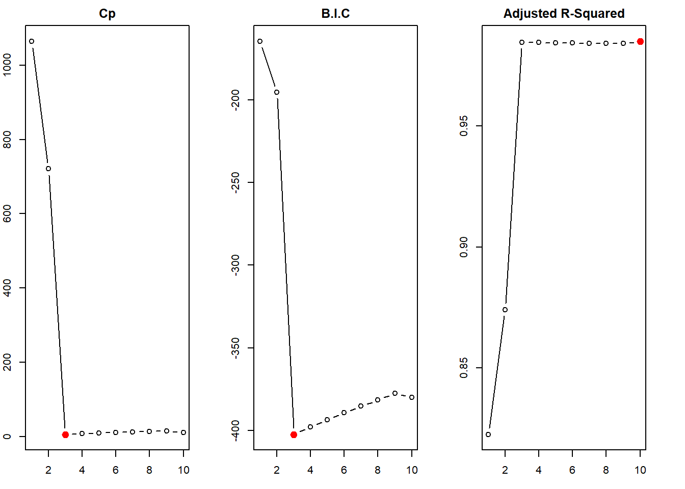
# Fitting the Backward Selection Model
regfit.bwd <- regsubsets(
y ~ x + I(x^2) + I(x^3) + I(x^4) + I(x^5) +
I(x^6) + I(x^7) + I(x^8) + I(x^9) + I(x^10),
data = sim, method = "backward", nvmax = 10
)
regfit.bwd.sum <- summary(regfit.bwd)
# Picking the best model and displaying its coefficients
which.min(regfit.bwd.sum$bic)[1] 5coef(regfit.bwd, which.min(regfit.bwd.sum$bic))(Intercept) x I(x^2) I(x^5) I(x^7) I(x^9)
5.9461466 5.5757855 4.0891739 3.2378562 -1.1414537 0.1208527 # Backward Stepwise Selection
# Plotting the Cp, BIC and Adjusted R-Squared versus number of predictors
par(mfrow = c(1, 3), mar = c(3, 2, 2, 3))
plot(regfit.bwd.sum$cp, type = "b", xlab = "Number of Predictors", main = "Cp")
points(x = which.min(regfit.bwd.sum$cp), y = min(regfit.bwd.sum$cp), col = "red", cex = 2, pch = 20)
plot(regfit.bwd.sum$bic, type = "b", xlab = "Number of Predictors", main = "B.I.C")
points(x = which.min(regfit.bwd.sum$bic), y = min(regfit.bwd.sum$bic), col = "red", cex = 2, pch = 20)
plot(regfit.bwd.sum$adjr2, type = "b", xlab = "Number of Predictors", main = "Adjusted R-Squared")
points(x = which.max(regfit.bwd.sum$adjr2), y = max(regfit.bwd.sum$adjr2), col = "red", cex = 2, pch = 20)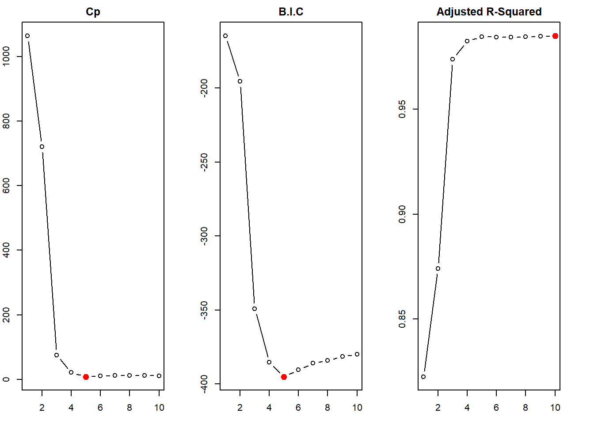
(e)
Now, we fit a lasso model to the sim data set using \(X\), \(X^2\), \(X^3\),…,\(X^{10}\) as predictors. For this, we use the glmnet() function with argument alpha = 1 from the glmnet library. We also use cross-validation to select the optimal value of \(\lambda\) using cv.glmnet() function. Further, we plot the cross-validation error as a function of \(\lambda\). The resulting coefficients at the optimal \(\lambda\) value are found using the predict() function. The results show that the lasso correctly finds out the relevant predictors \(X\), \(X^2\) and \(X^3\). The coefficients found using lasso at the optimal \(\lambda\) are quite close to the actual values i.e. \(\hat{\beta_0} = 6.01\), \(\hat{\beta_1} = 4.9\), \(\hat{\beta_2} = 4.01\) and \(\hat{\beta_3} = 2.98\).
# Loading library and creating X matrix and Y vector
library(glmnet)
X = model.matrix(y ~ x + I(x^2) + I(x^3) + I(x^4) + I(x^5) +
I(x^6) + I(x^7) + I(x^8) + I(x^9) + I(x^10),
data = sim)[,-1]
Y = sim$y
# Fitting the Lasso model on training set
lasso.mod = glmnet(X, Y, alpha = 1)
# Using Cross-Validation Lasso, displaying optimal value of lambda
cv.lasso = cv.glmnet(X, Y, alpha = 1)
bestlam = cv.lasso$lambda.min
bestlam[1] 0.03346741# Plotting Cross-Validation Error as a function of lambda
par(mfrow = c(1, 1))
plot(cv.lasso)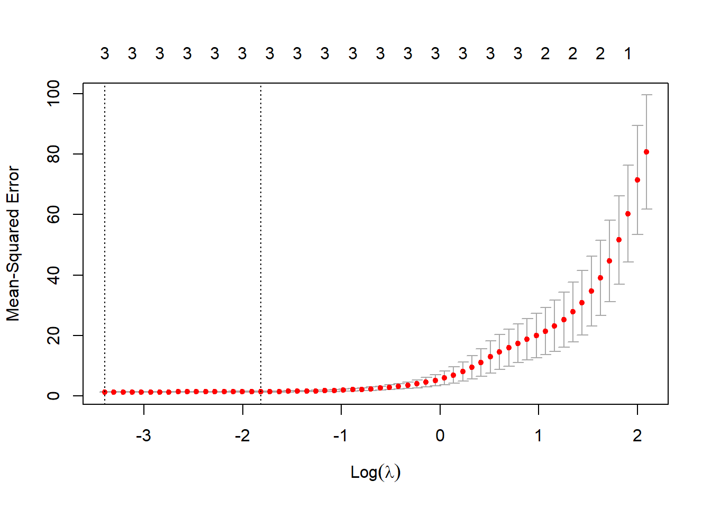
# Displaying resulting coefficients at optimal lambda value
coefs = predict(lasso.mod, type = "coefficients", s = bestlam)[1:10,]
coefs(Intercept) x I(x^2) I(x^3) I(x^4) I(x^5)
6.000538 4.896203 4.025918 2.986646 0.000000 0.000000
I(x^6) I(x^7) I(x^8) I(x^9)
0.000000 0.000000 0.000000 0.000000 # Displaying only non-zero coefficients
round(coefs[coefs != 0], 2)(Intercept) x I(x^2) I(x^3)
6.00 4.90 4.03 2.99 (f)
We now prepare the new model, where \(\beta_0 = 2\) and \(\beta_7 = 3\), as follows:
\[ Y = \beta_0 \ + \ \beta_7X^7 \ + \epsilon\] \[ Y = 2 \ + \ 3X^7 \ + \epsilon\]
Then, we perform the best subset selection and lasso.
First, on performing the best subset selection, we find that the BIC and \(C_p\) determine the best model to be one with 3 predictors: \(X^4\), \(X^6\) and \(X^7\). This predicts \(\hat{\beta_0} = 1.95\) and \(\hat{\beta_7} = 2.99\), which are quite close to true values. But, the best subset selection ends up including two irrelevant predictors in the best model.
# Generate data set according to the new model, using previous x and eps
y1 <- 2 + 3 * (x^7) + eps
# Create new data.frame sim1
sim1 <- data.frame(y1 = y1, x = x)
# Perform Best Subset Selection on new data
library(leaps)
regfit.best1 <- regsubsets(
y1 ~ x + I(x^2) + I(x^3) + I(x^4) + I(x^5) +
I(x^6) + I(x^7) + I(x^8) + I(x^9) + I(x^10),
data = sim1, nvmax = 10
)
regfit.best.sum1 <- summary(regfit.best)
# Displaying the coefficients for best model picked by Cp and BIC
round(coef(regfit.best1, which.min(regfit.best.sum1$bic)), 2)(Intercept) I(x^4) I(x^6) I(x^7)
1.95 0.15 -0.04 2.99 # Plotting the Cp, BIC and Adjusted R-Squared for various models in Best Subset Selection
par(mfrow = c(1, 3),
mar = c(3, 2, 2, 3))
plot(regfit.best.sum1$cp, type = "b", xlab = "Number of Predictors", main = "Cp")
points(x = which.min(regfit.best.sum1$cp), y = min(regfit.best.sum1$cp), col = "red", cex = 2, pch = 20)
plot(regfit.best.sum1$bic, type = "b", xlab = "Number of Predictors", main = "B.I.C")
points(x = which.min(regfit.best.sum1$bic), y = min(regfit.best.sum1$bic), col = "red", cex = 2, pch = 20)
plot(regfit.best.sum1$adjr2, type = "b", xlab = "Number of Predictors", main = "Adjusted R-Squared")
points(x = which.max(regfit.best.sum1$adjr2), y = max(regfit.best.sum1$adjr2), col = "red", cex = 2, pch = 20)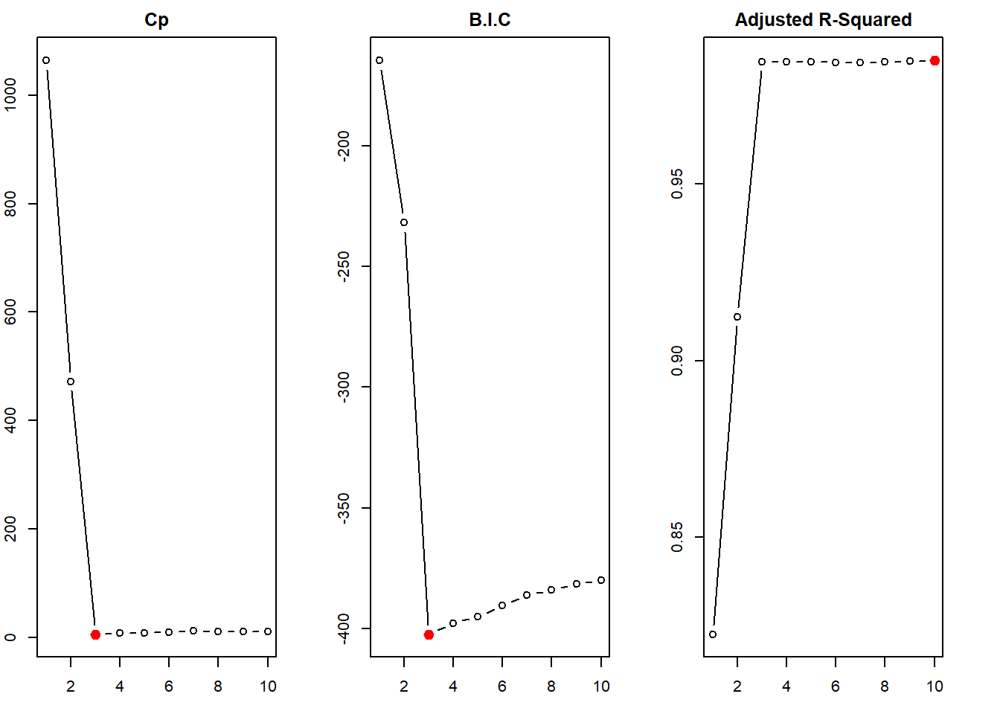
Now, we perform lasso on the new data set. The code is shown below. The results indicate that the best model selected by cv.glmnet() function correctly identifies \(\beta_7\) as the only significant predictor. The coefficient values of the selected lasso model are \(\hat{\beta_0} = 1.76\) and \(\hat{\beta_7} = 2.91\), which are slightly inaccurate with respect to the intercept. But, there are no irrelevant predictors included in the model, which provides the advantage of ease of interpretation.
These results indicate that lasso performs better than best subset selection when only a few of the predictor variables are actually related to the response. Lasso does a much better job in producing a sparse model which aids interpretability. However, if prediction accuracy is the sole purpose, or if many predictors are associated with the response, then Best Subset Selection can often outperform lasso.
library(glmnet)
X1 = model.matrix(y1 ~ x + I(x^2) + I(x^3) + I(x^4) + I(x^5) +
I(x^6) + I(x^7) + I(x^8) + I(x^9) + I(x^10),
data = sim1)[,-1]
Y1 = sim1$y1
# Fitting the Lasso model on training set
lasso.mod1 = glmnet(X1, Y1, alpha = 1)
# Using Cross-Validation Lasso, displaying optimal value of lambda
cv.lasso1 = cv.glmnet(X1, Y1, alpha = 1)
bestlam1 = cv.lasso$lambda.min
bestlam1[1] 0.03346741# Displaying resulting coefficients at optimal lambda value
coefs1 = predict(lasso.mod1, type = "coefficients", s = bestlam1)[1:10,]
coefs1(Intercept) x I(x^2) I(x^3) I(x^4) I(x^5)
1.762545 0.000000 0.000000 0.000000 0.000000 0.000000
I(x^6) I(x^7) I(x^8) I(x^9)
0.000000 2.910907 0.000000 0.000000 # Displaying only non-zero coefficients
round(coefs1[coefs1 != 0], 2)(Intercept) I(x^7)
1.76 2.91 Question 9
(a)
We first load the College data set and split it into training and test data sets. To split the data set, we create a boolean vector train using random sampling which creates nearly two equal subsets. We then use train to create the two subsets: College.Train and College.Test.
library(ISLR)
data("College")
# Check for and remove missing values
College = na.omit(College)
# Creating a boolean vector train to split the data set
set.seed(3)
train = sample(c(TRUE, FALSE), size = nrow(College), replace = TRUE)
# Creating two split data sets
College.Train = College[train, ]
College.Test = College[!train, ](b)
We now fit a linear model using least squares on the training set. The Test Mean Squared Error for this model is 1,450,888.
# Fitting linear model
lin.fit = lm(Apps ~ ., data = College.Train)
# Getting predicted values in the Test Set
pred.lin.fit = predict(lin.fit, newdata = College.Test)
# Calculating Test MSE
mse.lm = mean((College.Test$Apps - pred.lin.fit)^2)
mse.lm[1] 1450888(c)
Now, we fit a ridge regression model on the training set, with a \(\lambda\) chosen by cross-validation. The Test Mean Squared Error is calculated to be 1,488,034. This is nearly equal to, or slightly higher than the test error obtained in least squares regression.
library(glmnet)
# Creating Matrices for use in glmnet function, creating lambda values grid
TrainX = model.matrix(Apps ~ ., data = College.Train)[,-1]
TrainY = College.Train$Apps
TestX = model.matrix(Apps ~ ., data = College.Test)[,-1]
grid = 10^seq(10, -2, length = 100)
# Fitting Ridge Regression model and Cross Validation Model
ridge.mod = glmnet(TrainX, TrainY, alpha = 0, lambda = grid, thresh = 1e-12)
ridge.cv.mod = cv.glmnet(TrainX, TrainY, alpha = 0, lambda = grid, thresh = 1e-12)
# Selecting the best lambda value
lam.r = ridge.cv.mod$lambda.min
# Predicting values for the Test Set
pred.ridge = predict(ridge.mod, newx = TestX, s = lam.r)
# Calculating the Test MSE
mse.rr = mean((College.Test$Apps - pred.ridge)^2)
mse.rr[1] 1450919(d)
Now, we fit a lasso model on the training set, with \(\lambda\) chosen by cross validation. The Test MSE using lasso is 1,450,907. This is again nearly the same as least squares regression. There are 18 non-zero coefficients (1 intercept and 17 predictors). Thus, the lasso does not weed out any of the predictors. This is why the test MSE for lasso and least squares regression is nearly the same.
# Fitting Lasso model and Cross Validation Lasso Model
lasso.mod = glmnet(TrainX, TrainY, alpha = 1, lambda = grid, thresh = 1e-12)
lasso.cv.mod = cv.glmnet(TrainX, TrainY, alpha = 1, lambda = grid, thresh = 1e-12)
# Selecting the best lambda value
lam.l = lasso.cv.mod$lambda.min
# Predicting values for the Test Set
pred.lasso = predict(lasso.mod, newx = TestX, s = lam.l)
coefs.lasso = predict(lasso.mod, s = lam.l, type = "coefficients")[1:18,]
# Calculating the Test MSE
mse.l = mean((College.Test$Apps - pred.lasso)^2)
mse.l[1] 1450907# Displaying the non-zero coefficient estimates selected by lasso at best lambda value
length(coefs.lasso[coefs.lasso != 0])[1] 18(e)
Now, we fit a Principal Components Regression model on the training set, with \(M\) chosen by cross validation. The summary function on the pcr() object and the plot of cross-validation MSE tells us that the chosen \(M=17\). Thus, no dimension reduction occurs in the training data set using PCR. The test MSE is calculated to be 1,450,888. This is the same as least squares regression. This is expected because no reduction in dimensionality occurs by PCR in this data set.
# Loading library and setting seed
library(pls)
set.seed(3)
# Fitting a pcr regression on training set
pcr.fit = pcr(Apps ~ ., data = College.Train, scale = TRUE, validation = "CV")
par(mfrow = c(1, 1))
# Plotting the Cross-Validation MSE and finding the M with minimum MSE
validationplot(pcr.fit, val.type = "MSEP")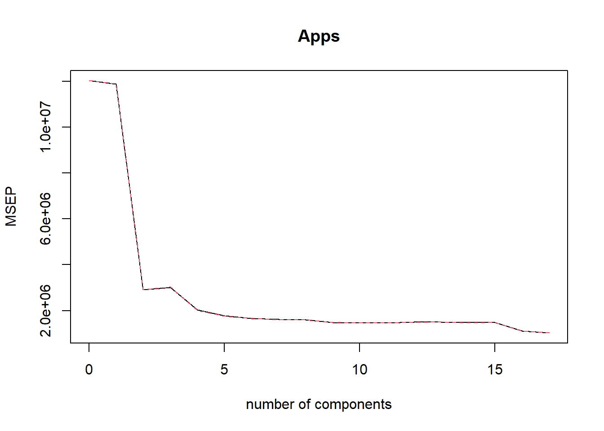
which.min(pcr.fit$validation$adj)
## [1] 17
# Calculating predicted values and test MSE
pred.pcr = predict(pcr.fit, newdata = College.Test, ncomp = 17)
mse.pcr = mean((College.Test$Apps - pred.pcr)^2)
mse.pcr
## [1] 1450888(f)
Now, we fit a Partial Least Squares model on the training set, with \(M\) chosen by cross validation. The summary function on the plsr() object and the plot of cross-validation MSE tells us that the chosen \(M=16\). Thus, negligible dimension reduction occurs in the training data set using PLS. The test MSE is calculated to be 1,450,875. This is the same as least squares regression. This is expected because negligible reduction in dimensionality occurs by using Partial Least Squares in this data set.
# Fitting a PLS regression on training set
pls.fit = plsr(Apps ~ ., data = College.Train, scale = TRUE, validation = "CV")
# Plotting the Cross-Validation MSE and finding M with minimum MSE
validationplot(pls.fit, val.type = "MSEP")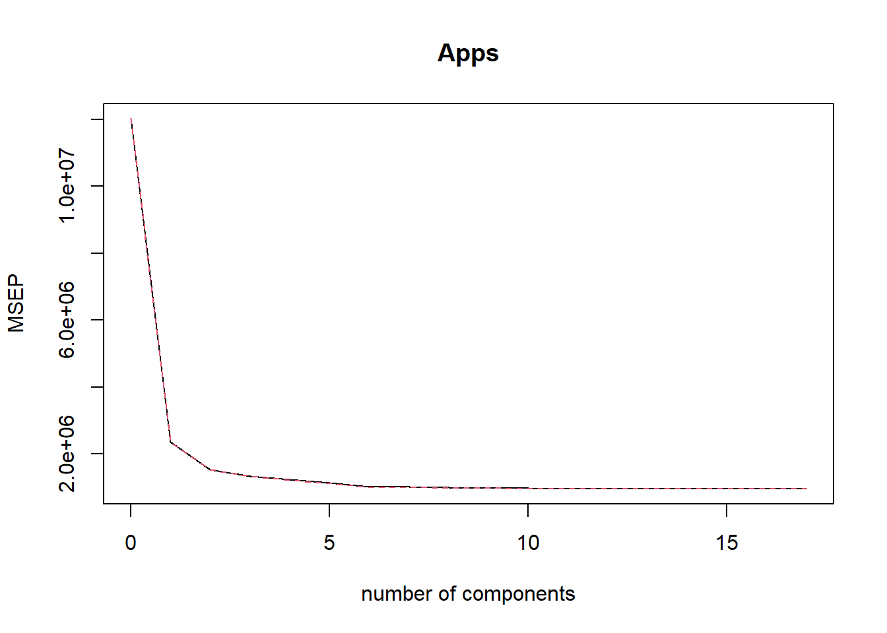
which.min(pls.fit$validation$adj)[1] 16# Calculating predicted values and test MSE
pred.pls = predict(pls.fit, newdata = College.Test, ncomp = 16)
mse.pls = mean((College.Test$Apps - pred.pls)^2)
mse.pls[1] 1450875(g)
The results from all five methods: least squares regression, ridge regression, lasso, principal components regression and partial least squares regression yield similar test MSE. There is very little difference among test errors from these five approaches. Rather, all the models predict Apps using other predictors in the College data set with high accuracy. Using the code below, we depict a table with MSE of the “Null Model” and the MSE from these five methods. All these five methods explain around 92 % of the variability in Apps.
# Calculating MSE of the Null Model
mse.null <- mean((College.Test$Apps - mean(College.Test$Apps))^2)
TestMSE <- c(mse.null, mse.lm, mse.rr, mse.l, mse.pcr, mse.pls)
TestRSquared <- round(1 - (TestMSE / mse.null), 4)
comparison <- data.frame(
Models = c(
"Null", "Least Squares", "Ridge Regression",
"Lasso", "Principal Components Regression",
"Partial Least Sqaures Regression"
),
TestMSE = TestMSE,
TestRSquared = TestRSquared
)
comparison %>%
kbl() %>%
kable_classic_2()| Models | TestMSE | TestRSquared |
|---|---|---|
| Null | 17818435 | 0.0000 |
| Least Squares | 1450888 | 0.9186 |
| Ridge Regression | 1450919 | 0.9186 |
| Lasso | 1450907 | 0.9186 |
| Principal Components Regression | 1450888 | 0.9186 |
| Partial Least Sqaures Regression | 1450875 | 0.9186 |
Question 10
(a)
First, we create a simulated data set with \(p=20\) features and \(n=1000\) observations. First, we create a matrix X with 20 random variables X1, X2, ... ,X20 over 1000 observations. We also create an \(\epsilon\) (error term) called eps. Now, we make a simulated Y which is dependent on even numbered columns / variables of X. For ease, we make all coefficients \(\beta_j = 3\). Finally, we combine X and Y into a simulated data set sim.
# Creating predictors and error term
X <- rnorm(n = 20 * 1000)
X <- matrix(X,
nrow = 1000, ncol = 20,
dimnames = list(NULL, paste("X", c(1:20), sep = ""))
)
eps <- rnorm(1000)
# Creating a simulated response Y that is only related to even numbered predictors
# Keeping all coefficients = 3 (for ease of remembering and comparing later)
predictors <- seq(from = 2, to = 20, by = 2) # vector of actual predictor columns
coeffs <- rep(3, 10) # vector of coefficients, all equal to 3
Y <- X[, predictors] %*% coeffs + eps
# Creating the data.frame 'sim'
Sim <- data.frame(cbind(Y, X))
colnames(Sim)[1] <- "Y"(b)
We now split the data set sim into a training set of 100 observations Train.Sim, and a testing set of 900 observation Test.Sim.
# Create boolean vector train to split into training data (100) and test data (900)
set.seed(3)
train = sample(x = 1:nrow(Sim), size = 100, replace = FALSE)
# Create Training and Test Subsets of data.frame
Train.Sim = Sim[train, ]
Test.Sim = Sim[-train, ](c)
We now perform the Best Subset Selection on the training set. For this, initially we load the library leaps which contains the regsubsets() function to perform best subset selection. Then, we create training matrix TrainX (we could bypass this redundancy using original X variable, but proceeding this way using the split data frame keeps things simple). We also create a TrainY vector to use in regsubsets(). The rss component of the summary of regsubsets() created object contains Residual Sum of Squares. We divide these by n (number of training observations) to obtain Training MSE. The plot of Training MSE, as expected, shows that minimum training MSE is achieved with the model having maximum predictors (\(p=20\)).
# Load libraries, and create matrices and vector for regsubsets()
library(leaps)
TrainX <- model.matrix(Y ~ ., data = Train.Sim)
TrainY <- Train.Sim$Y
# Running a Best Subset Selection on Training Data Set
regfit.best <- regsubsets(TrainX, TrainY, nvmax = 20)Reordering variables and trying again:# Calculating Training MSE
Train.MSE <- rep(NA, 20)
for (i in 1:20) {
coefs <- coef(regfit.best, id = i)
Pred.Y.Train <- TrainX[, names(coefs)] %*% coefs
Train.MSE[i] <- mean((TrainY - Pred.Y.Train)^2)
}
plot(Train.MSE,
type = "b", col = "blue",
xlab = "Number of Predictors in model",
ylab = "Training MSE"
)
points(
x = which.min(Train.MSE),
y = min(Train.MSE),
col = "blue", cex = 2, pch = 20
)
legend(x = 5, y = 50, "Training MSE", col = "blue", lty = 1)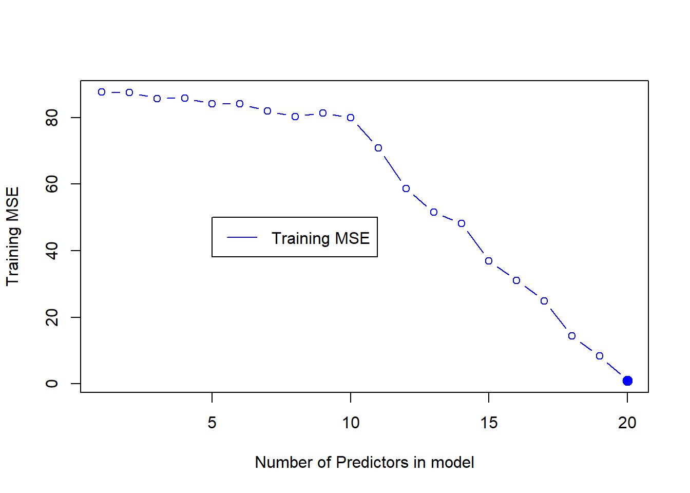
(d)
Now, we compute the Test MSE using the best models (for each number of predictors selected by the Best Subset Selection Method). The plot of Test MSE (overlaid on Training MSE) shows us that the Test MSE is always higher than the Training MSE.
# Creating Testing X matrix and Y vector to use in calculating Test MSE
TestX <- model.matrix(Y ~ ., data = Test.Sim)
TestY <- Test.Sim$Y
# Calculating Test MSE for each of 20 models selected by best subset selection
Test.MSE <- rep(NA, 20)
for (i in 1:20) {
coefs <- coef(regfit.best, id = i)
Pred.Y <- TestX[, names(coefs)] %*% coefs
Test.MSE[i] <- mean((Pred.Y - TestY)^2)
}
# Plotting the Test MSE
plot(Test.MSE,
type = "b", xlab = "Number of Predictors in model",
ylab = "Mean Squared Error", col = "red"
)
points(
x = which.min(Test.MSE), y = min(Test.MSE),
col = "red", cex = 2, pch = 20
)
points(Train.MSE,
type = "b", col = "blue",
xlab = "Number of Predictors in model", ylab = "Training MSE"
)
points(
x = which.min(Train.MSE), y = min(Train.MSE),
col = "blue", cex = 2, pch = 20
)
legend(x = 14, y = 80, c("Training MSE", "Test MSE"), col = c("blue", "red"), lty = c(1, 1))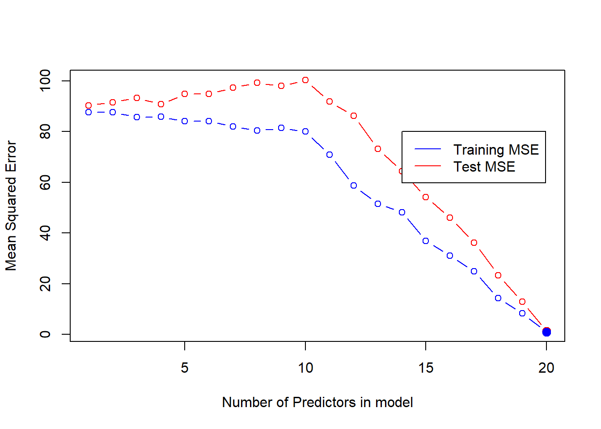
(e)
The 10-variable model has the lowest Test MSE. Thus, best subset selection method has correctly picked the correct number of predictors in the best model. Further, it has even correctly identified the 10 relevant predictors as the even numbered predictors. The coefficient values are also very close to the actual value of 3. The code below displays the results.
# Finding Model with lowest Test MSE
which.min(Test.MSE)[1] 20# Displaying the predictors identified by the Best Test MSE model
names(coef(regfit.best, id = which.min(Test.MSE))) [1] "(Intercept)" "X2" "X3" "X4" "X5"
[6] "X6" "X7" "X8" "X9" "X10"
[11] "X11" "X12" "X13" "X14" "X15"
[16] "X16" "X17" "X18" "X19" "X20"
[21] "(Intercept)"(f)
The model at which the test set MSE is minimized is very close to the true model used to generate the data. The coefficient values displayed below are very close to the actual coefficient value of 3 for each of the predictors (ranging from 2.84 to 3.17). Though, the model does add an unnecessary intercept of 0.17. Overall, the best subset selection does an excellent job.
round(coef(regfit.best, id = which.min(Test.MSE)),2)(Intercept) X2 X3 X4 X5 X6
-0.15 3.00 0.03 2.99 0.07 3.00
X7 X8 X9 X10 X11 X12
0.04 3.03 -0.07 2.74 -0.15 2.97
X13 X14 X15 X16 X17 X18
-0.08 2.85 -0.03 3.03 0.02 2.85
X19 X20 (Intercept)
0.13 3.09 0.00 (g)
We now create a plot of the following quantity \(\sqrt{\sum_{j=1}^{p} (\beta_j - \hat{\beta_j^r})^2}\) versus the number of predictors in each of the models selected by Best Subset Selection. First, we create a vector of true coefficients created by us in the part (a) of the question (including the intercept). Then, we calculate \(\sqrt{\sum_{j=1}^{p} (\beta_j - \hat{\beta_j^r})^2}\) for each of the models using a for loop. The resulting plot is shown below. It is clear that the plot reaches its minimum at exactly the same point as in (d), i.e. difference in coefficients is least when the test MSE is minimum.
# Re-create a vector of true coefficients we set in (a)
TrueCoefs <- rep(0, 21)
TrueCoefs[predictors] <- 3
names(TrueCoefs) <- c(paste("X", c(1:20), sep = ""), "(Intercept)")
# Create an empty data-frame to store the results
DiffCoefs <- rep(NA, 20)
# Run the loop for calculating Square-Root of difference in coefficients for
# best subset models selected at each number of predictors
for (i in 1:20) {
vals <- coef(regfit.best, id = i)
preds <- names(coef(regfit.best, id = i))
DiffCoefs[i] <- sqrt(sum((TrueCoefs[preds] - vals)^2))
}
plot(DiffCoefs,
type = "b", col = "orange",
xlab = "Number of predictors in the model",
ylab = "Sqrt(Sum of (betas - beta_hats)^2)"
)
points(
x = which.min(DiffCoefs), y = min(DiffCoefs),
col = "orange", cex = 2, pch = 20
)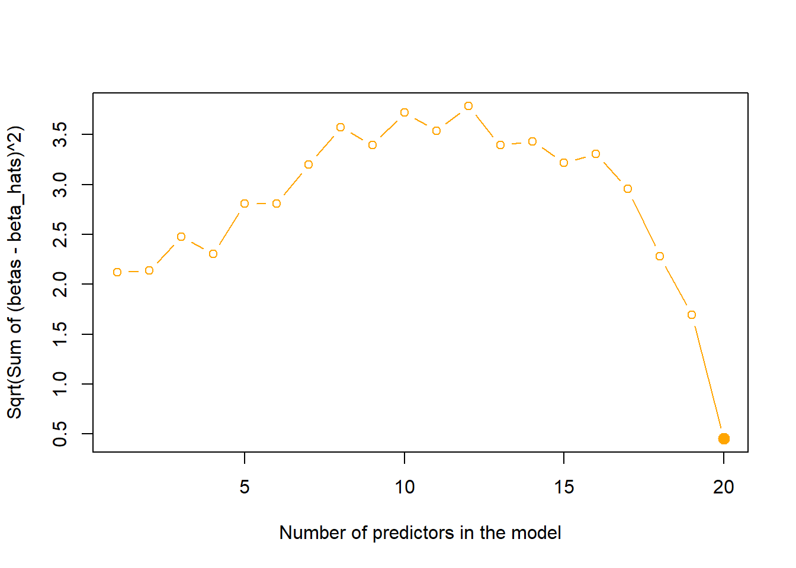
Question 11
(a)
For part (a) of this question, we fit the various models and approaches within linear methods to predict per capital crime rate crim in the Boston data set. Right from the part (a), we will split the data into equally sized training and test sets. However, in question (b) when propose the best model, we will fit the model we select at the end of this part (a) to the entire data set to get the best coefficient estimates.
# Loading libraries and examining data set
library(MASS)
data("Boston")
Boston <- na.omit(Boston)
dim(Boston)[1] 506 14names(Boston) [1] "crim" "zn" "indus" "chas" "nox" "rm" "age"
[8] "dis" "rad" "tax" "ptratio" "black" "lstat" "medv" # Create a training and test set for `Boston` data set
set.seed(3)
train <- sample(c(TRUE, FALSE), size = nrow(Boston), replace = TRUE)
table(train)train
FALSE TRUE
252 254 # Creating Test & Train X matrices and Y vectors to use in fitting models
TrainX <- model.matrix(crim ~ ., data = Boston[train, ])
TrainY <- Boston$crim[train]
TestX <- model.matrix(crim ~ ., data = Boston[!train, ])
TestY <- Boston$crim[!train]Initially, we start with Best Subset Selection. The best subset selection model statistics \(C_p\) and B.I.C. suggest using the model with 3 predictors rad, black and lstat. However, the validation set approach and the 10-fold Cross Validation approach pick up the best model as the one with 9 predictors: zn, indus, nox, dis, rad, ptratio, black, lstat and medv. The lowest Test MSE achieved is 39.33 with 10-fold CV in 9-variable model and 37.06 in Validation-Set approach.
library(leaps)
fit.bss <- regsubsets(crim ~ ., data = Boston[train, ], nvmax = 13)
# Examining the best model based on fitted model statistics
par(mfrow = c(1, 3), mar = c(5, 2, 3, 1))
plot(summary(fit.bss)$bic,
type = "b", col = "blue", xlab = "Model Predictors",
ylab = "", main = "B.I.C"
)
points(
x = which.min(summary(fit.bss)$bic), y = min(summary(fit.bss)$bic),
col = "blue", pch = 20, cex = 2
)
plot(summary(fit.bss)$cp,
type = "b", col = "red", xlab = "Model Predictors",
ylab = "", main = "Cp"
)
points(
x = which.min(summary(fit.bss)$cp), y = min(summary(fit.bss)$cp),
col = "red", pch = 20, cex = 2
)
plot(summary(fit.bss)$adjr2,
type = "b", col = "purple", xlab = "Model Predictors",
ylab = "", main = "Adjusted R-Squared"
)
points(
x = which.max(summary(fit.bss)$adjr2), y = max(summary(fit.bss)$adjr2),
col = "purple", pch = 20, cex = 2
)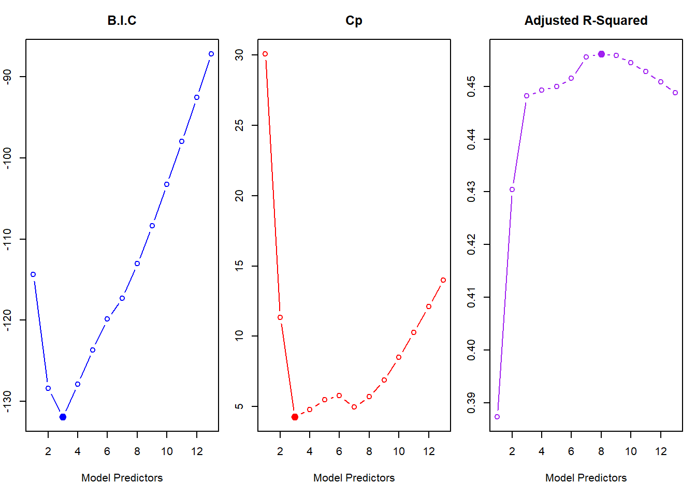
# Displaying best model based on fitted model statistics
round(coef(fit.bss, id = 3), 2)(Intercept) rad black lstat
1.26 0.46 -0.02 0.27 # Computing Test MSE using a self-created function
predict.regsubsets <- function(object, newdata, id, ...) {
formula <- as.formula(object$call[[2]]) # Extracting formula from regsubsets object
cofs <- coef(object, id) # Extracting coefficients with their names
testmat <- model.matrix(formula, data = newdata) # Create test X matrix
testmat[, names(cofs)] %*% cofs # Predicted values
}
# Finding best model (lowest Test MSE) as per Validation Set Approach
ModelsMSE <- rep(NA, 13)
for (i in 1:13) {
pred.bss <- predict.regsubsets(fit.bss, newdata = Boston[!train, ], id = i)
ModelsMSE[i] <- mean((TestY - pred.bss)^2)
}
# Finding the best model (lowest Test MSE) by 10-fold Cross-Validation
set.seed(3)
k <- 10
folds <- sample(1:k, size = nrow(Boston), replace = TRUE)
CVerrors <- matrix(NA,
nrow = k, ncol = 13,
dimnames = list(NULL, paste(1:13))
)
for (j in 1:k) {
fit <- regsubsets(crim ~ ., data = Boston[folds != j, ], nvmax = 13)
for (i in 1:13) {
pred <- predict.regsubsets(fit, newdata = Boston[folds == j, ], id = i)
CVerrors[j, i] <- mean((Boston$crim[folds == j] - pred)^2)
}
}
MSEs.CV <- apply(CVerrors, MARGIN = 2, FUN = mean)
# Plotting the Test MSEs from Validation Set and 10-fold CV approaches
par(mfrow = c(1, 2))
plot(ModelsMSE,
type = "b", xlab = "Number of Predictors in the Model",
ylab = "", main = "Validation Set Test MSE", col = "orange"
)
points(
x = which.min(ModelsMSE), y = min(ModelsMSE), col = "orange",
cex = 2, pch = 20
)
plot(MSEs.CV,
type = "b", xlab = "Number of Predictors in the Model",
ylab = "", main = "10-fold CV Test MSE", col = "brown"
)
points(
x = which.min(MSEs.CV), y = min(MSEs.CV), col = "brown",
cex = 2, pch = 20
)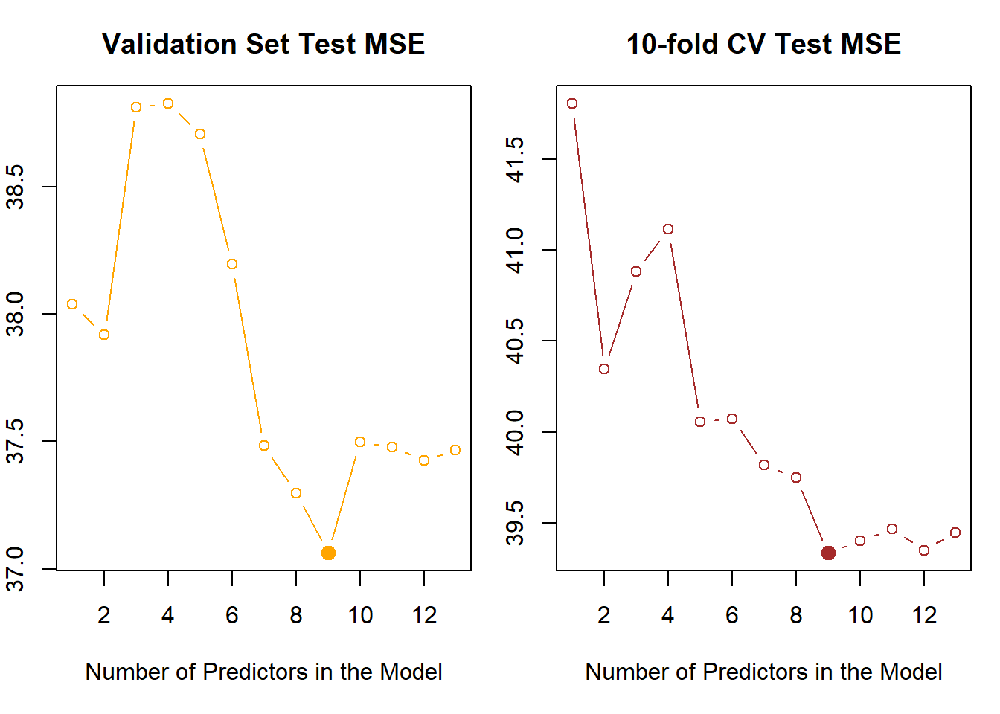
# Displaying the best model selected finally (Best Subset Selection)
round(coef(regsubsets(crim ~ ., data = Boston, nvmax = 13), id = 9), 2)(Intercept) zn indus nox dis rad
19.12 0.04 -0.10 -10.47 -1.00 0.54
ptratio black lstat medv
-0.27 -0.01 0.12 -0.18 Now, we use the lasso on the same data set using glmnet() function of the glmnet library. We also compute the ideal \(\lambda\) value using cv.glmnet(). Then, using the ideal \(\lambda\) tuning parameter, we compute the Test MSE. The results indicate that the best lasso model has a Test MSE of 37.34. It uses all 13 predictors.
library(glmnet)
# Fitting lasso model
lasso.mod = glmnet(TrainX, TrainY, alpha = 1)
# Fitting lasso with cross-validation for lambda value
lasso.cv = cv.glmnet(TrainX, TrainY, alpha = 1)
bestlam = lasso.cv$lambda.min
# Computing Test MSE for best lasso model
lasso.pred = predict(lasso.mod, newx = TestX, s = bestlam)
MSE.lasso = mean((TestY - lasso.pred)^2)
MSE.lasso[1] 37.35164lasso.coefs = predict(lasso.mod, s = bestlam, type = "coefficients")[1:15,]
names(lasso.coefs[lasso.coefs != 0]) [1] "(Intercept)" "zn" "indus" "chas" "nox"
[6] "rm" "dis" "rad" "ptratio" "black"
[11] "lstat" "medv" Now, we use the ridge regression on the same data set using glmnet() function with alpha = 0 from the glmnet library. We also compute the ideal \(\lambda\) value using cv.glmnet(). Then, using the ideal \(\lambda\) tuning parameter, we compute the Test MSE. The results indicate that the best ridge regression model has a Test MSE of 37.87.
# Fitting ridge regression model
rr.mod <- glmnet(TrainX, TrainY, alpha = 0)
# Fitting ridge regression with cross-validation for lambda value
rr.cv <- cv.glmnet(TrainX, TrainY, alpha = 0)
bestlam <- rr.cv$lambda.min
# Computing Test MSE for best ridge regression model
rr.pred <- predict(rr.mod, newx = TestX, s = bestlam)
MSE.rr <- mean((TestY - rr.pred)^2)
MSE.rr[1] 37.90711rr.coefs <- predict(rr.mod, s = bestlam, type = "coefficients")[1:15, ]
round(rr.coefs, 3)(Intercept) (Intercept) zn indus chas nox
12.424 0.000 0.031 -0.096 -0.642 -3.226
rm age dis rad tax ptratio
-0.535 0.006 -0.567 0.349 0.005 -0.074
black lstat medv
-0.014 0.180 -0.087 # Plotting Diagnostics of Lasso and Ridge Regression
par(mfrow = c(2, 2), mar = c(2.5, 2, 2, 2))
plot(lasso.cv)
text(x = -4, y = 100, "Lasso CV")
plot(rr.cv)
text(x = 2, y = 100, "Ridge Regression CV")
plot(lasso.mod)
text(x = 4, y = -8, "Lasso Coefficients")
plot(rr.mod)
text(x = 4, y = -4, "Lasso Coefficients")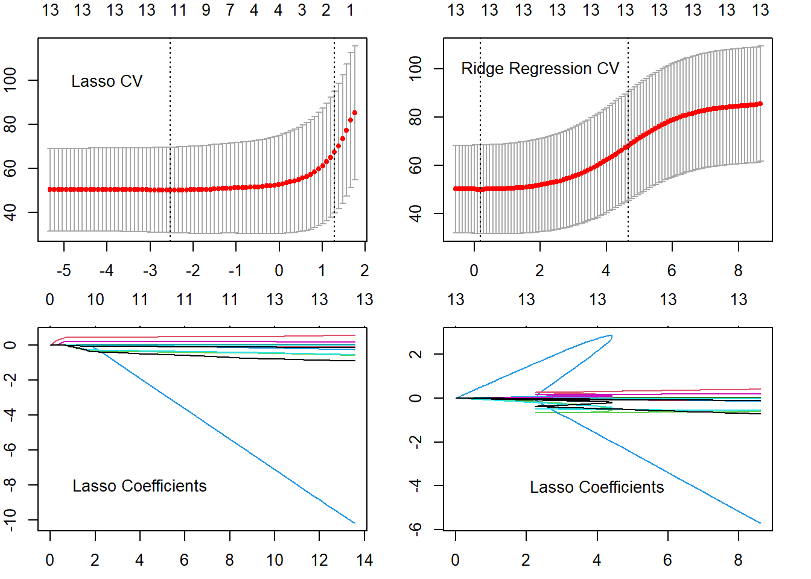
Now, we use Principal Components Regression and Partial Least Squares on this data set using pcr() and plsr() functions from pls library. The cross validation Test MSEs are calculated automatically. The least Test MSE occur at \(M=13\). Thus, no dimension reduction occurs. The lowest Test MSEs are around 42 with both PCR and PLS. These are higher than other methods.
library(pls)
# Fitting the PCR and PLS models
set.seed(3)
fit.pcr <- pcr(crim ~ ., data = Boston, scale = TRUE, validation = "CV")
fit.pls <- plsr(crim ~ ., data = Boston, scale = TRUE, validation = "CV")
# Plotting the Test MSE (Cross Validation) from PCR and PLS regression
par(mfrow = c(1, 2))
validationplot(fit.pcr, val.type = "MSEP", main = "PCR", ylab = "MSE")
validationplot(fit.pls, val.type = "MSEP", main = "PLS", ylab = "MSE")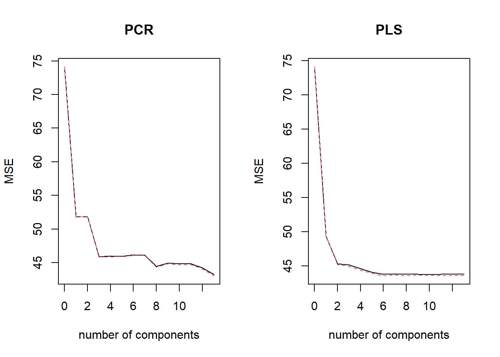
(b)
Based on these results in (a), the model with the lowest Test MSE happens to be Best Subset Selection model with 9 predictors. But, since validation set Test MSE is highly variable, we use the Cross-Validation Test MSE. The model with lowest Cross Validation Test MSE turns out to be the Lasso model using all 13 predictors.
(c)
Yes, the model chosen in part (b) includes all the 13 predictors, i.e. all features of the data set are used for prediction. This is in agreement with the findings from ridge regression, principal components regression and partial least squares. None of these models favor dimension reduction.